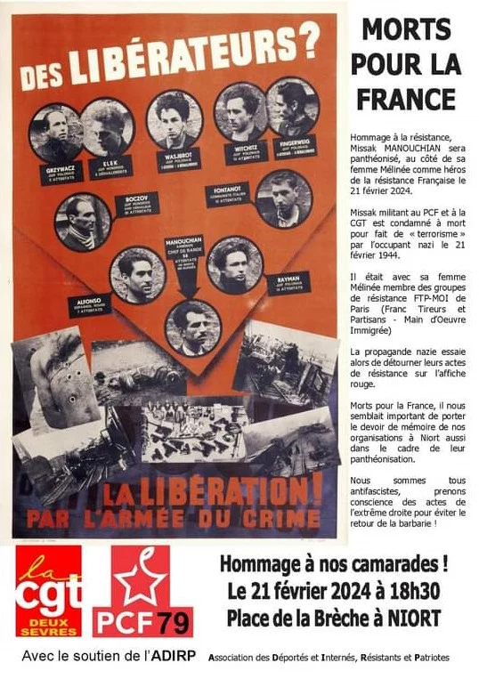
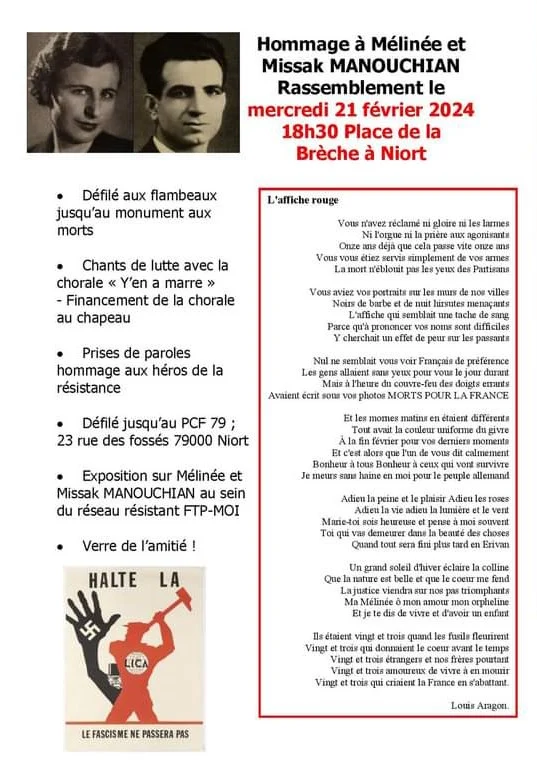

Publication d’archives
Missak Manouchian : Un communiste, poète et ouvrier entrera au Panthéon pour l’éternité, le 21 février 2024
Date indiquée par Facebook · 16 février 2024
Texte conservé avec la publication
Missak Manouchian : Un communiste, poète et ouvrier entrera au Panthéon pour l’éternité, le 21 février 2024
Emmanuel Macron avait annoncé, le 18 juin dernier, qu’il avait choisi le résistant arménien et chef militaire des FTP-MOI Missak Manouchian pour demeurer au sein du temple de la République, 80 années après son exécution à 37 ans par les nazis au Mont-Valérien, à Suresnes (Hauts-de-Seine). Pour ne pas séparer le couple, il y entrera accompagné de Mélinée, sa femme également résistante, à qui il écrivait dans sa dernière lettre : « Je suis sûr que le peuple français et tous les combattants de la Liberté sauront honorer notre mémoire dignement. » Voici ce temps venu.
Dans les Deux-Sèvres, nous contribuerons à cet hommage en nous retrouvant mercredi 21 février 2024 à 18h30 en bas de la place de la Brèche à Niort, avant un défilé aux flambeaux jusqu'au monument aux martyrs de la résistance où se tiendront prises de paroles et chants de lutte avec chorale. Puis un défilé aura lieu jusqu'au siège du PCF79 où se tient une exposition sur Mélinée et Missak MANOUCHIAN.
#panthéon
#Manouchian


Sources
Archive rouge · export Facebook · AR-0002-FB-01476
À lire aussi · À Niort, nous avons rendu hommage à Missak et Mélinée Manouchian et à leurs camarades